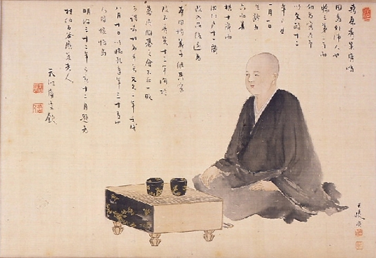

Honinbo Shusaku
[1829 - 1862]

About
Honinbo Shusaku is a Japanese professional go player from the 19th century. He is known for his undefeated streak of 19 games during the annual castle games; thirty-game match with Ota Yuzo; lead innovator of the eponymous Shusaku opening for Black; post-death ascension to one of the Go Sages; and next to his teacher, Honinbo Shuwa, considered to have been the strongest player from 1847/8 to his death in 1862. He was nicknamed Invincible Shusaku because of his castle games performance.
Timeline

- ~1829~ Born on the island of Innoshima as Kuwahara Shusaku
- ~1837~ He joins the Honinbo school as a student of Honinbo Jowa
- ~1840~ Shusaku leaves Edo and returns to his home for a period of over a year
- ~1844~ Reaches professional rank of 4 Dan
- ~1846~ Plays against Gennan Inseki, arguably the strongest player of that time
- ~1848~ Becomes the heir to the head of the Honinbo house
- ~1848~ Is recognized as the strongest go player alive with the exception of Shuwa
- ~1853~ 30-game go competition between Shusaku and Ota Yuzo
- ~1862~ Contracts cholera and later dies at the age of 33